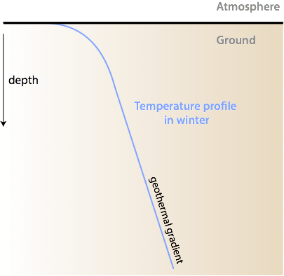

High Arctic Landscape on Fosheim Peninsula, Ellesmere Island - a rapidly warming Arctic causes permafrost thawing and mass movements (Photo: A. Cassidy)
Learning Objectives
Describe how can we predict soil temperature using a selected solution to the heat conduction equation.
Explain how soil temperature waves move in soils.
Photo: A. Cassidy
Learning Objectives
How do substrate temperatures change on diurnal and annual scales?
Can we predict timing and amplitude of soil temperature waves using a selected solution to the heat conduction equation.
How can we alter substrates to control soil thermal climates (agriculture, design)?
What direction is the soil heat flux (QG) at the surface?
A Downward (+)
B Upward (-)
Sub-Surface Temperature Profile

Idealized soil temperature profile in winter
Sub-Surface Temperature Profile
Sub-Surface Temperature Profile
Permafrost Temperature Profile
Permafrost Temperature Profile
Permafrost Temperature Profile
Sub-Surface Temperature Variability
Westham Island, 2cm depth
Sub-Surface Temperature Variability
Westham Island, 10cm depth
Sub-Surface Temperature Variability
Westham Island, 20cm depth
Sub-Surface Temperature Variability
Westham Island, 50cm depth
Soil Temperature Waves
Surface wave moves down in response to radiative forcing at different periods \(P\)
annual (1 year) to ~14 m
daily (1 day) to ~0.75 m
cloud passage (~15 min) to ~0.1 m
Wave amplitude and phase shift (time lag) with depth:
amplitude decreases exponentially
phase shift increases linearly
Soil Temperature Waves
The daily and annual periodic forcing by the sun creates a surface temperature (\(T_o\)) wave, which propagates into the soil below. If we make the following assumptions:
The thermal diffusivity κ = k/C is uniform
Cycles are sinusoidal (better for year than day)
Then then \(T_o\) at time \(t\) (in seconds) over period \(P\) can be approximated as:
where \(\overline{T_o}\) is the mean surface temperature over \(P\), \(\Delta T_o\) is the wave amplitude (\(\small\frac{1}{2}\) range of \(T_o\)), and the angular frequency of oscillation is \(\omega = 2\pi / P\).
Calculate the Angular Frequency (iClicker)
Annual\(\omega_a\)
# Number of seconds in a yearP =60*60*24*365.24# Solveomega_a =2*pi/Psprintf('Angular Frequncy of a year %0.3e s-1',omega_a)
[1] "Angular Frequncy of a year 1.991e-07 s-1"
Daily\(\omega_d\)
Which value give the closest approximation of \(\omega_d\)?
A 3.636e-05 s-1
B 1.454e-04 s-1
C 7.272e-05 s-1
D 1.991e-07 s-1
Analytical solution for sinusoidal forcing.
Checkout this resource to see some animated plots.
A Solution of Fourier’s Heat Conduction
With the surface temperature wave equation as the boundary condition, we can find an analytic solution to the Fourier heat conduction equation in 1-D:
\[
T_{(z,t)}=\overline{T_o}+\Delta T_o e^{-z(\small\frac{\omega}{2K})^{1/2}} \sin(\omega t - (\small\frac{\omega}{2K})^{1/2}z)
\qquad(2)\]
exponential term: Wave amplitude at depth z relative to the surface temperature wave
sine function: Phase shift of the wave at depth z
Note: the wave decays exponentially with depth, and the decay is less in soils with large κ, or if the period is longer.
Damping Depth
The inverse of the exponential term defines a useful feature, the damping depth (\(D\)).
It is the depth at which the surface temperature wave is reduced to \(e^{-1}\) (37%) of its value at z = 0.
At 3D it drops below 5%, and 4.6 D below 1%.
\[
D = \sqrt{\small\frac{2K}{\omega}} = \sqrt{\small\frac{KP}{\pi}}
\qquad(3)\]
The red line is the surface temperature range \(2\DeltaT_o\). Blue is the temperature range at depth \(D\); \(0.37 2\DeltaT_o\)
Example - Effect of Organic Cover
Phase Shift - Max and Min Soil Temperatures
Term 2 of the 1-D analytical solution (Equation 2) gives the phase shift equation for features such as maximum and minimum soil temperatures, which occurs at 0.5 π and 1.5 π, i.e.:
\(\sin(\omega t - (\small\frac{\omega}{2K})^{1/2}z) = \pm 1\)
\(\Delta t_m\) is the phase shift; \(t_{m_1}\) and \(t_{m_2}\) are times at which maximum or minimum soil temperatures occur at \(z_1\) and \(z_2\) respectively.
Phase Shift (iClicker)
When will soil temperature reaches its maximum at 5 cm if the maximum surface temperature is measured at 13:00? Assume a thermal diffusivity K = 5.0×10−7 m1 s−1.
A 5863.2301428
B 14.628675
c 14:38
Phase shift (Implications)
The phase shift at a certain depth is least in soils with large κs.
These idealized patterns are disrupted by:
Variable cloud cover.
Rain (percolation gives wetting front).
Freezing/melting (latent heat effects).
Snow cover (insulates).
Soil inhomogeneities in the horizontal and vertical.
Modification and Control of Soil Climates
Relatively little can be done economically to modify the external forcing (shade is an exception). But the nature of the soil can be manipulated.
Albedo - surface dressing with dark or light-cultured materials.
Ridge and furrows - control surface geometry to maximize or minimize K* and L* and surface moisture state.
Moisture - wetting or drainage can greatly alter thermal properties.
Compaction / cultivation - control of air content and its role in thermal properties.
Soil and atmosphere share in accepting heat during daytime and releasing heat at night. \(\mu_g\) and \(\mu_a\) are the soil and atmospheric thermal admittance respectively.
\(\mu_a\) increases with wind speed and convection (mixing).
Take home points
We observe temperature waves with annual, diurnal and even short-term (cloud-passage) periods.
In a uniform soil, the wave amplitude decays exponentially, whereas the phase-shift is linear with depth.
The damping depth is a commonly used term to quantify the depth to which 37% of the surface amplitude reaches down.